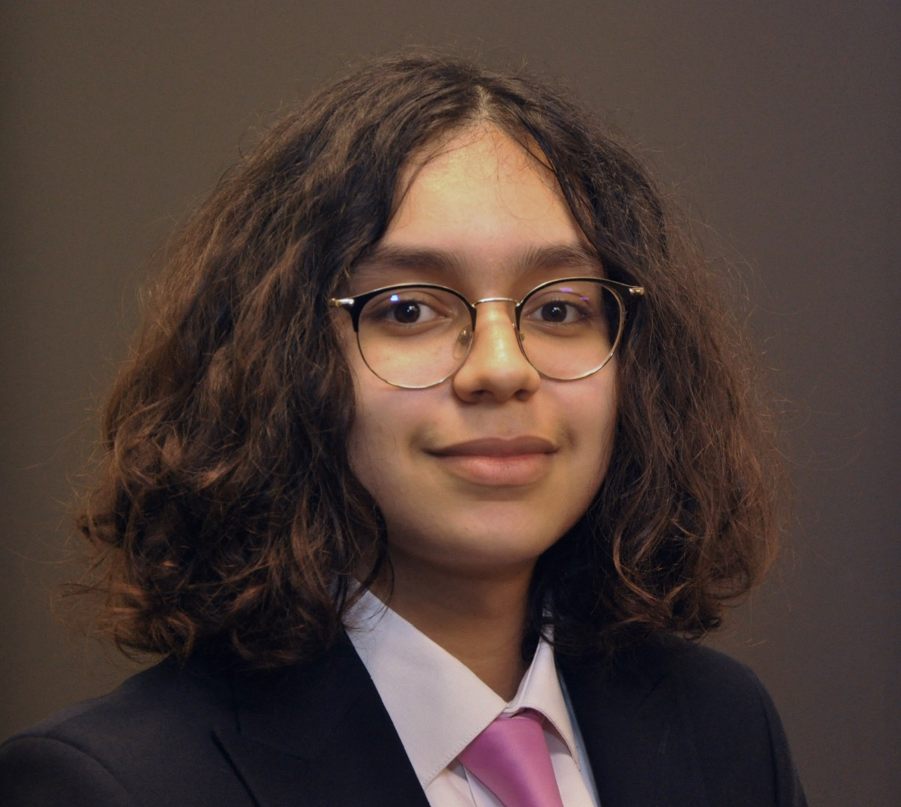
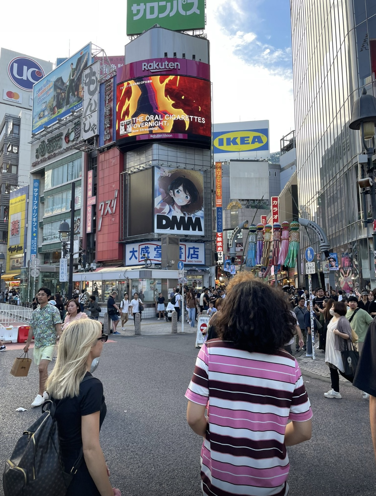
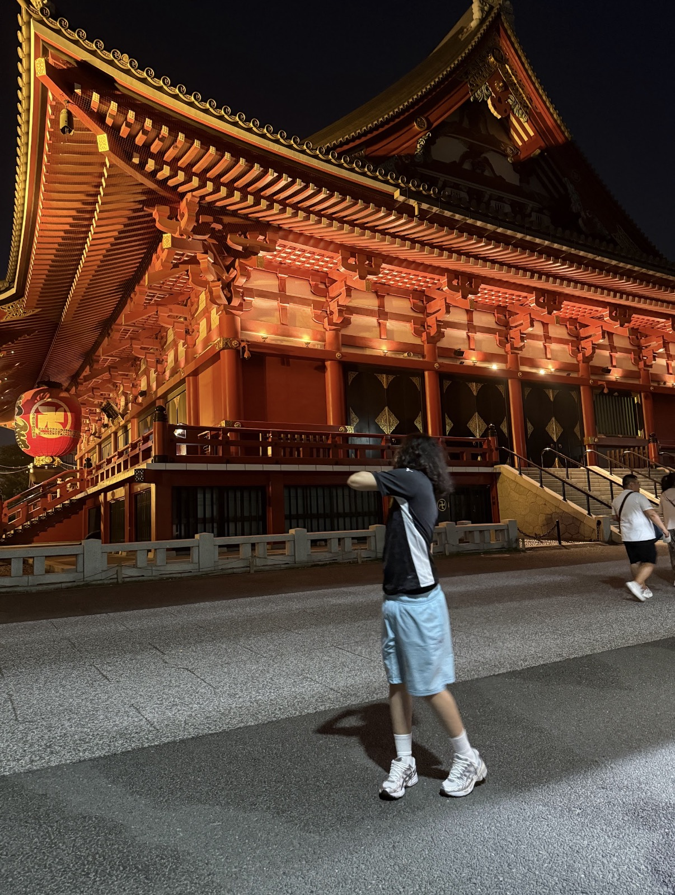
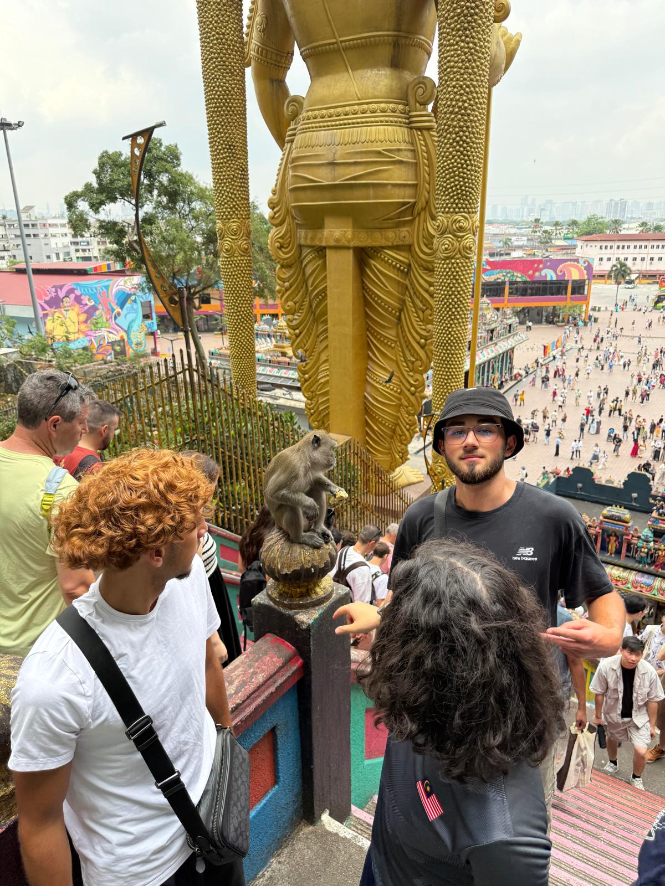
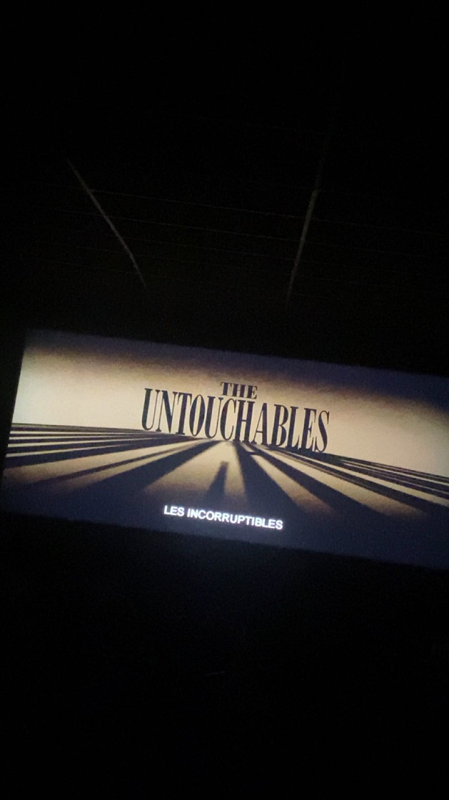

Étudiant en droit, curieux de tout, passionné par les grandes histoires.
Je suis étudiant en troisième année de BUT Carrières Juridiques, parcours Patrimoine et Finance, à l'IUT de Villetaneuse (Université Sorbonne Paris Nord). Mon parcours est marqué par une expérience terrain inhabituelle pour un étudiant en formation initiale : deux stages consécutifs dans le même Établissement Public de Coopération Intercommunale, la CCPOH à Pont-Sainte-Maxence, ce qui m'a permis de construire une vraie connaissance institutionnelle et de progresser d'une année sur l'autre.
Je m'oriente vers le droit du numérique pour la suite de mes études — un domaine que j'ai découvert en formation et qui me semble être l'un des terrains juridiques les plus mouvants et stimulants du moment. Ce que j'aime dans le droit, c'est justement ce qu'il partage avec mes autres passions : la complexité des systèmes, les décisions qui ont des conséquences réelles, et les histoires humaines derrière les textes.
Voyager, c'est pour moi la meilleure façon de sortir de ses cadres de référence. Le Japon et la Malaisie ont été des expériences radicalement différentes — deux façons d'aborder l'espace, le temps, et les gens.




Le cinéma est sans doute ma passion la plus ancienne. Je fréquente régulièrement les salles indépendantes parisiennes — moins pour suivre l'actualité des sorties que pour explorer : un réalisateur, une époque, un genre. J'ai un abonnement et j'y vais souvent, parfois au hasard. C'est d'ailleurs en choisissant une séance au dernier moment que j'ai découvert Hitchcock et ses 39 Marches — une révélation.
J'ai une affection particulière pour Clouzot et le cinéma français classique (Le Salaire de la peur reste l'un de mes films préférés), et pour Scorsese — pas seulement pour ses films de gangsters, mais pour sa façon de construire des personnages dont on ne peut pas se défaire.
Ce qui m'attire dans les jeux vidéo, c'est la même chose que dans les séries et le cinéma : les grandes histoires, les personnages dans lesquels on s'immerge. La différence, c'est qu'on est directement impliqué — on est le personnage. Ce mur brisé entre spectateur et acteur, c'est ce que je trouve unique dans ce médium. Je suis particulièrement attiré par les récits longs et denses.
Le sport fait partie de ma semaine de façon quasi-obligatoire — c'est autant une question d'équilibre mental que physique. Dépenser de l'énergie régulièrement, c'est non négociable pour moi.